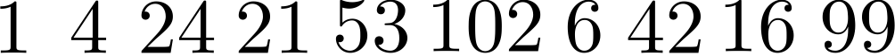
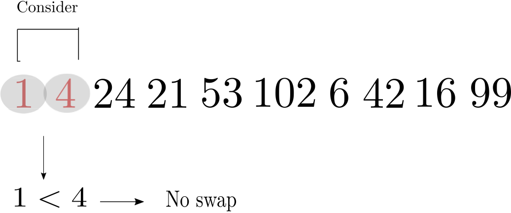
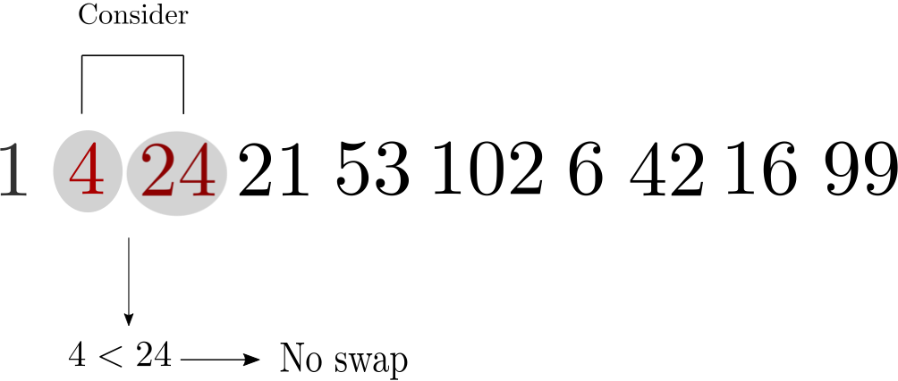
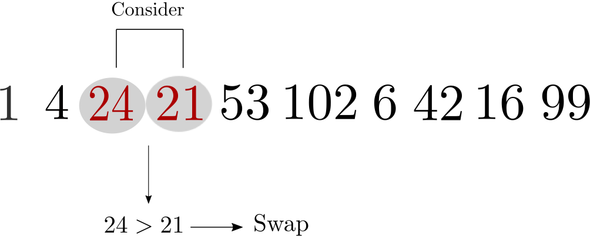
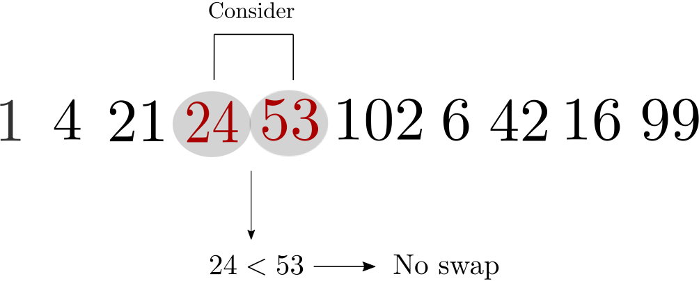
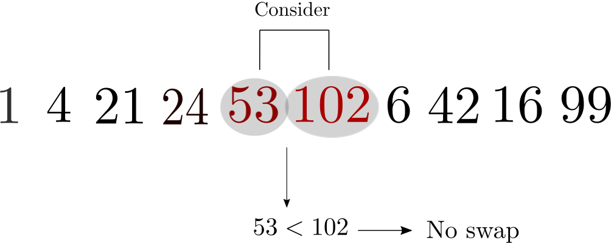
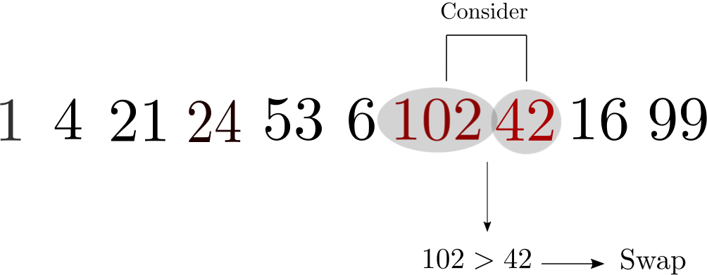
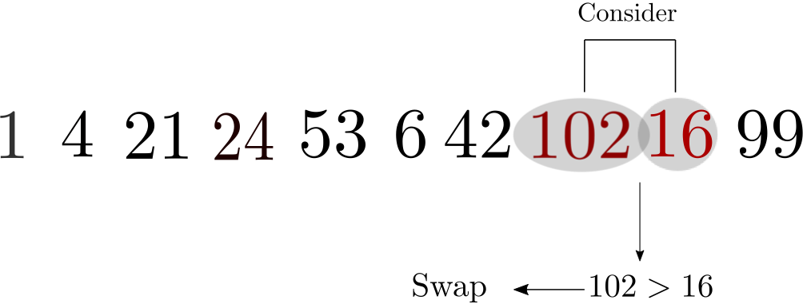
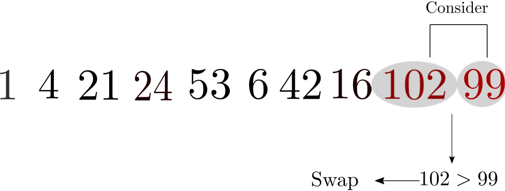

Bubble Sort
The Bubble Sort algorithm sorts an array by repeatedly passing through it and comparing each two adjacent elements, swapping a pair of elements if they are incorrectly ordered. At the end of each pass through the array, the largest previously unsorted element is in the correct position.
The name Bubble Sort comes from the comparison between elements rising through the array and bubbles floating to the top of a drink.
Let's consider an example of the Bubble Sort algorithm being used to sort an array. Consider the array below:

(1) Compare first two elements, $1$ and $4$.
(2) Compare elements $4$ and $24$.
(3) Compare elements $24$ and $21$.
(4) Compare elements $24$ and $53$.
(5) Compare elements $53$ and $102$.
(6) Compare elements $102$ and $6$.


(8) Compare elements $102$ and $16$.
(9) Compare elements $102$ and $99$.
(10) The array element $102$ is now sorted correctly (it has 'bubbled' to the top). This means it no longer needs to be considered in future passes over the array.
We then complete a second pass through the array (comparing elements like we did in steps 1 to 9), but this time only up to the penultimate element $99$. Repeating this procedure, we produce an array in which each element is in the correct order.
As described above, the Bubble Sort algorithm only stops when we have completed $ n-1 $ passes through the array, where $ n $ is the length of the array. We could however stop the first time that a pass is completed without a swap being made.
The Bubble Sort algorithm is not used in practical applications as it is highly inefficient. In the worst case scenario, where the array is in exact reverse order, it requires $ \mathcal{O}(n^{2})$ operations (more precisely, $\frac{n(n+1)}{2}$ swaps) to sort an array of length $ n $. In fact, the average complexity of Bubble Sort is $\mathcal{O}(n^{2})$.
Below are Bubble Sort programs which are written in Python, C++ and MATLAB: